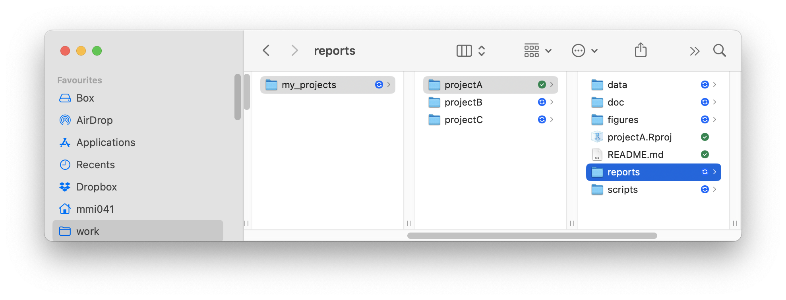
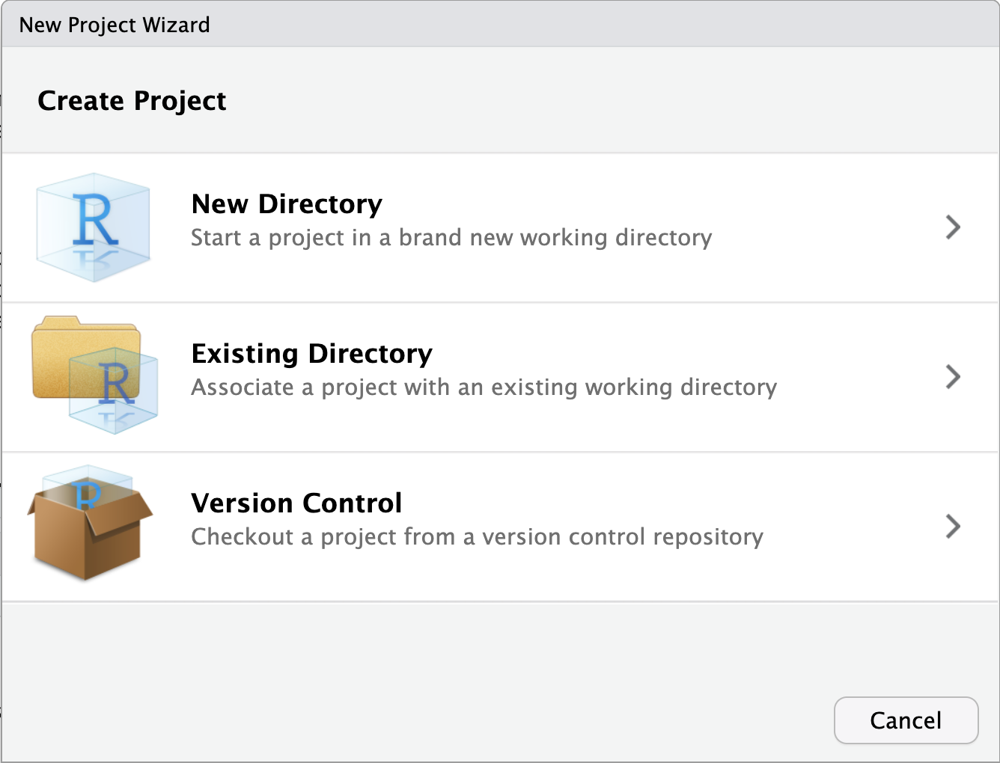
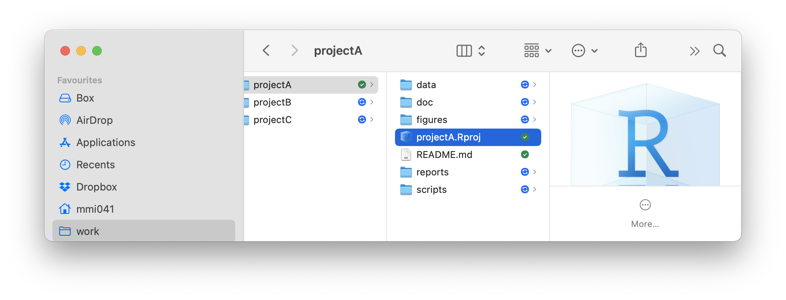

Managing projects in R
Many new users of R and RStudio wonder how they should go about to structure their data-analysis projects. Coming from a software like SPSS, many users are used to having a single file that contains all the data and the analysis. In R, however, it is recommended to split up the project into multiple files and folders. This makes it easier to keep track of the different parts of the project and to collaborate with others. In this post, we will show you our recommended way to structure your projects for analyzing data in R and RStudio.
Quick overview
Here is a quick overview of the files and folders that we recommend you create for your R projects:

data/is a folder that contains all data in the “rawest” possible format (e.g.,.csv,.xlsx,.txt, etc.)doc/is a folder that contains all documentation for the project (e.g., the project proposal, the final report, ethics, etc.)figures/is a folder that contains all figures that are generated during the analysisscripts/is a folder that contains all R-scripts that you will create during the analysisreports/is a folder that contains all reports that are generated during the analysis (e.g.,.html,.pdf,.docx, etc.)projectA.Rprojis the RStudio project file that you will use to open the project in RStudioREADME.mdis a markdown file that contains a brief description of the project
We will motivate and discuss why we recommend this structure in the following sections.
Introduction
We recommend that you create an overarching folder that contains all your data-analysis projects (here, it is called my_projects). Within this folder, we will create new sub-folders that will contain everything related to our different projects. For example, for a analyzing data for your Bachelor-thesis, you could create a folder called my_projects/bachelor or for your new paper on trauma patients, you could create a folder my_projects/trauma (the / in a directory name means that it will be created within the folder that comes before it). In the figure above, there are three different projects called projectA, projectB, and projectC.
These project folders contain all relevant files for that particular project. The goal of this post is to show you how to structure these project directories in a standard way that is similar for all your projects. This is very important, as it will enable you to quickly find the files you are looking for and to collaborate with others.
Creating a new project
We recommend starting a new data-analysis project from within RStudio. Simply open RStudio and click on File -> New Project.... This will open the “New Project Wizard” that will guide you through the process of creating a new project.

If you have already created the project directory (in our example projectA), you can select the option “Existing Directory” and navigate to the folder that contains the project directory. If you have not yet created the project directory, you can select the option “New Directory” and specify the name of the project directory (choose “New project” as the project type). In both cases, RStudio will open in the newly created project.

Importantly, RStudio has created a file called projectA.Rproj in the project directory. This file is called the RStudio project file and it contains information about the project that RStudio needs to know in order to work with the project. Do not delete or move this file. From now on, whenever you want to work on this particular project, simply navigate to the project folder projectA and double-click on the projectA.Rproj file. RStudio will open and load the project.
Populating the project directory
Before doing anything else, we recommend creating a file called README.md in the project directory. This file should contain a brief description of the project, including the goal of the project, the data that you are analyzing, and any other relevant information (such as the date and place the data was collected). This file is written in markdown, which is a simple way to format text. Here is an example of what the README.md file might look like:
# Project A
This project analyzes data from a study on happiness and age.
The data was collected in 2024 in Oslo, Norway. The goal of the project is to
investigate the relationship between age and happiness and to identify
factors that influence happiness.
## Data
The data for this project is stored in the `data` directory.
The following files are available:
- `questionnaires.csv`: Contains responses to a questionnaire about happiness
- `demographics.xlsx`: Contains demographic information about the participants
- `additional_measures.sav`: Contains additional measures of happiness
## Related papers
- Doe, J., & Smith, J. (2025). Age and happiness: A meta-analysis.
*Journal of Happiness Studies*, 10(2), 123-135.
## Contributors
- John Doe
- Jane Smith
- Asbjørn Asbjørnsen
- Teodor FontaneIt is very useful to keep this file up-to-date as the project progresses. It can serve as a quick reference for what the project is about and what files are available. It can also be useful for collaborators who are working on the project with you.
Next, we recommend adding any information about your current project to the doc folder. This folder can contain any documentation that is relevant to the project, such as the project proposal, the final report, ethics applications, etc. You can create a new folder called doc within the project directory and add any relevant files to this folder. For example, you might add a file called project_proposal.docx to the doc folder that contains the project proposal, or a file called ethics_approval.pdf that contains the ethics approval for the project. Keeping this type of meta-information close to the project data can be helpful when you need to find it later on.
The next step is moving your raw data into the project directory. Create a folder called data within the project directory and move all your raw data files into this folder. These files might come from an online software such as Nettskjema, be produced by an experimental script in lab studies or may be Excel or SPSS files where you have stored your data. Copy or move these files into the data directory and give them “telling” names (e.g., questionnaires.csv, participant01.xlsx, etc.).
Importing and analyzing data
In the next step, you will want to read these files into R/RStudio so that you can start analyzing the data. We recommend that you create a new R-script in the scripts directory called 01_import_data.R. The initial number in that script name specifies that this script should be run first. We recommend creating new scripts for each step of the analysis and numbering them in the order that they should be run. This can make it easier to keep track of the analyses when exploring the data.
In the 01_import_data.R script, you can use R’s many functions for reading data files (e.g., read.csv(), read_excel(), etc.) to read the data files into R. In our example, we have added files questionnaires.csv, demographics.xlsx and additional_measures.sav to the data folder. The 01_import_data.R script might look like this:
# Load the necessary packages
library(readr)
library(readxl)
library(haven)
# Read the data files
questionnaires <- read_csv("data/questionnaires.csv")
demographics <- read_excel("data/demographics.xlsx")
additional_measures <- read_sav("data/additional_measures.sav")After you have read the data into R, you can start analyzing the data. We recommend that you create a new script in the scripts directory called 02_explorative_analysis.R. In this script, you can start exploring the data, creating plots, and running descriptive analyses. You can include the first script in this script to ensure that the data is loaded before you start analyzing it by using source("scripts/01_import_data.R"). For example, the 02_explorative_analysis.R script might look like this:
# Load the data
source("scripts/01_import_data.R")
# Load the necessary packages for plotting/descriptive analysis
library(ggplot2)
library(dplyr)
# Create a plot
ggplot(data = questionnaires, aes(x = age, y = happiness)) +
geom_point() +
labs(title = "Happiness as a function of age")
# Run a descriptive analysis
summary(demographics)Additional analyses can be added in further scripts (e.g., 03_multilevel_model.R, 04_test_logistic_regression.R, etc.).
Instead of splitting the analysis over several scripts, you can also collect all of the code in a single script. However, it is often a good idea to create new scripts as our insight into the data and the desired analyses evolve. That way, it is possible to save an earlier version of the analysis that we might want to come back to later on.
Saving figures and reports
Often, you create figures or tables during the analysis that you want to save for later use. We recommend that you create a new folder called figures within the project directory and save all figures that you create during the analysis in this folder. You can save the figures using the ggsave() function from the ggplot2 package. For example, you can save the plot that you created in the 02_explorative_analysis.R script like this:
# code from 02_explorative_analysis.R above
# ...
# Save the plot
ggsave("figures/02_happiness_age_plot.png", plot = p)This will create a PNG image of the plot and save it in the figures directory under the name 02_happiness_age_plot.png. Note that we added the number of the script that the plot was produced from to the filename (i.e., the figure 02_happiness_age_plot.png was produced in script starting with 02, which is the script file scripts/02_explorative_analysis.R). That way, it is easy to keep track of which script produced which figure also later when using them in scientific papers or other reports.
Finally, you might want to create reports that summarize the results of the analysis. We recommend that you create a new folder called reports within the project directory and save all reports that you create during the analysis in this folder. There are many different ways to create relevant reports. The simplest way might be to create a Word-file, for example reports/02_data_summary.docx, where you collect notes, tables and figures that are relevant for the analysis. A more elegant but also more advanced way to create reports is using Quarto that mixes R code and text and can easily be translated into a Word report, a website, a powerpoint presentation and many other formats. See the Tutorial from the Quarto website.
Advanced project management
As you become more familiar with using R and RStudio, you might want to consider using both, a more elaborate structure for your projects and advanced management tools. An excellent resource for suggestions to implement a more advanced project structure is the ProjectTemplate package. This package provides a template for structuring your projects that includes features for “caching” intermediate results, loading packages automatically, providing convenient ways to transparently load and manage data and more.
The preferred tool to boost your project managegment is Git that allows you to implement version control for your projects (that means that you will be able to track changes to your files over time and collaborate with others). This allows you to manage your projects on Github which is an important platform for sharing and collaborating on projects.
These tools can be very powerful, but they also have a steep learning curve. We recommend that you first become comfortable with the basic project structure that we have outlined above before you start using these more advanced tools.
Further information
- Using RStudio Projects from POSIT
- Markdown basics from Quarto
- ProjectTemplate for advanced project management
- Intro for Git and Github for RStudio
- Happy Git a comprehensive guide for Git And Github with R/RStudio